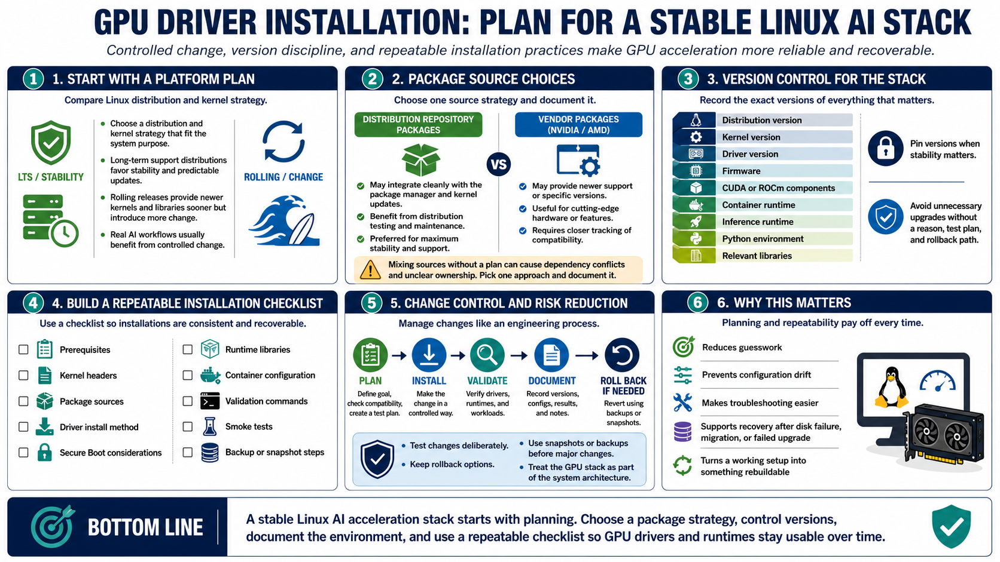

Installation Planning and Version Control
Connecting to LMS... Progress: in progress

Narration
GPU driver installation should start with a plan. Choose a Linux distribution and kernel strategy that fit the system's purpose. Long-term support distributions often favor stability and predictable updates. Rolling releases may provide newer kernels and libraries sooner, but they can also introduce more change. AI systems that support real workflows usually benefit from controlled change.
Repository packages and vendor packages each have tradeoffs. Distribution packages may integrate cleanly with the package manager and kernel update process. Vendor packages may provide newer support or specific versions. Mixing sources without a plan can create dependency conflicts or unclear ownership of installed files. Pick an approach and document it.
Version control for the stack is operational discipline. Record the distribution version, kernel, driver, firmware, CUDA or ROCm components, container runtime, inference runtime, Python environment, and relevant libraries. Pin versions when the system needs stability. Avoid unnecessary upgrades on stable AI systems unless there is a clear reason, test plan, and rollback path.
Build a repeatable installation checklist. Include prerequisites, kernel headers, package sources, driver install method, Secure Boot considerations, runtime libraries, container configuration, validation commands, smoke tests, and backup or snapshot steps. A checklist reduces guesswork and makes it possible to rebuild the same acceleration stack after a disk failure, migration, or failed upgrade.